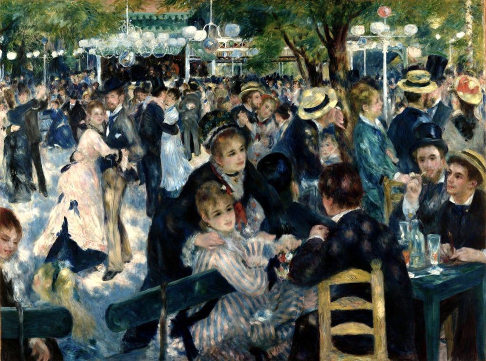
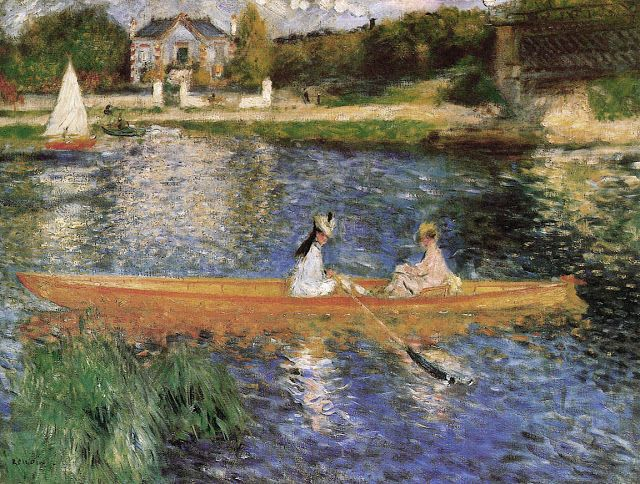
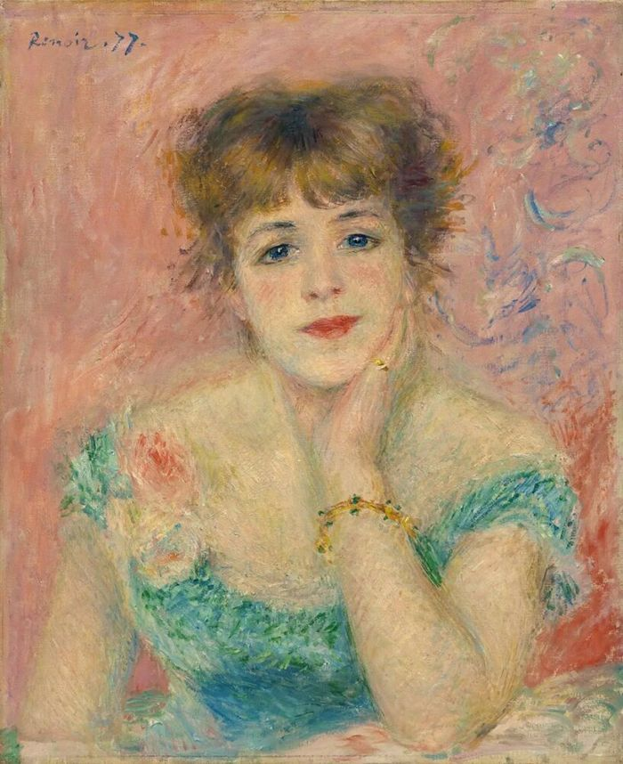
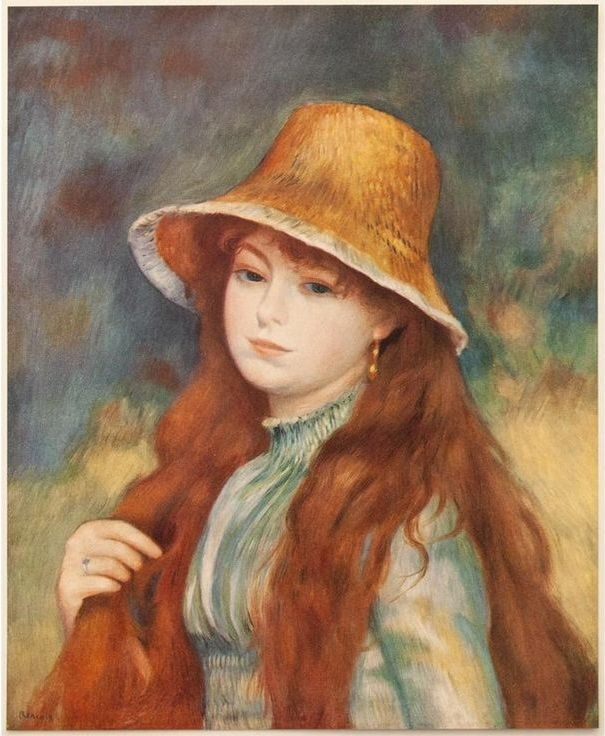
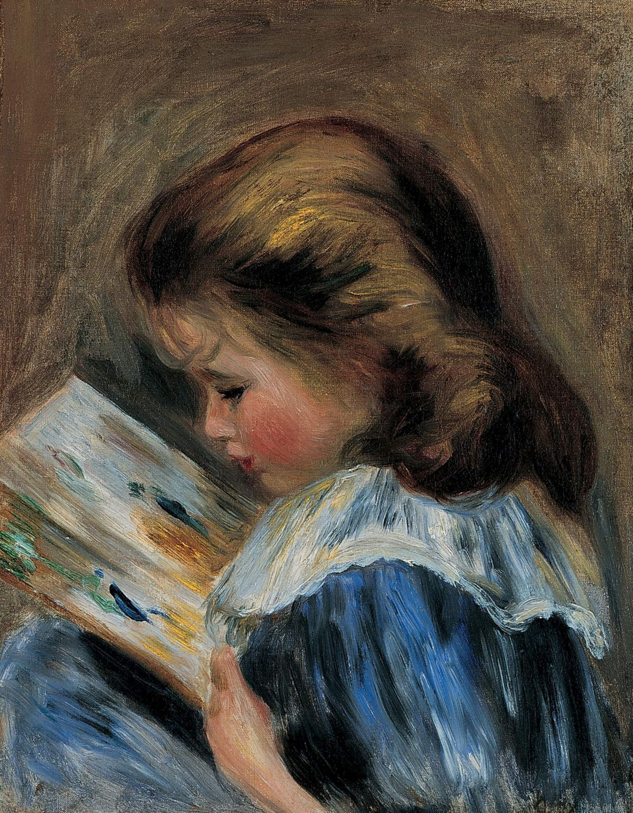

Bal du moulin de la Galette
1876
Le tableau représente un après-midi animé au Moulin de la Galette, à Montmartre, à Paris, à la fin du XIXe siècle. Renoir capture l’atmosphère joyeuse d’un dimanche où les gens se réunissent pour danser, discuter et profiter de leur temps libre sous les arbres. À travers la lumière, les couleurs vives et les touches de pinceau fluides, il transmet le mouvement et l’énergie de la vie parisienne moderne. La scène invite le spectateur à partager un moment de bonheur, de convivialité et de plaisir parmi les habitants de la ville.






